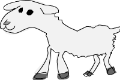
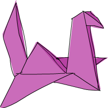
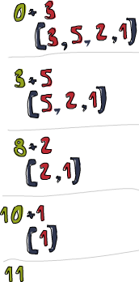

高阶函数

Haskell 中的函数可以作为参数和回传值传来传去，这样的函数就被称作高阶函数。高阶函数可不只是某简单特性而已，它贯穿于 Haskell 的方方面面。要拒绝循环与状态的改变而通过定义问题"是什么"来解决问题，高阶函数必不可少。它们是编码的得力工具。
Curried functions
本质上，Haskell 的所有函数都只有一个参数，那么我们先前编那么多含有多个参数的函数又是怎么回事? 呵，小伎俩! 所有多个参数的函数都是 Curried functions。 什么意思呢? 取一个例子最好理解，就拿我们的好朋友 max 函数说事吧。它看起来像是取两个参数，回传较大的那个数。 实际上，执行 max 4 5 时，它会首先回传一个取一个参数的函数，其回传值不是 4 就是该参数，取决于谁大。 然后，以 5 为参数调用它，并取得最终结果。 这听着挺绕口的，不过这一概念十分的酷! 如下的两个调用是等价的：
ghci> max 4 5 5 ghci> (max 4) 5 5
把空格放到两个东西之间，称作函数调用。它有点像个运算符，并拥有最高的优先级。 看看 max 函数的类型: max :: (Ord a) => a -> a -> a。 也可以写作: max :: (Ord a) => a -> (a -> a)。 可以读作 max 取一个参数 a，并回传一个函数(就是那个 ->)，这个函数取一个 a 类型的参数，回传一个a。 这便是为何只用箭头来分隔参数和回传值类型。
这样的好处又是如何? 简言之，我们若以不全的参数来调用某函数，就可以得到一个不全调用的函数。 如果你高兴，构造新函数就可以如此便捷，将其传给另一个函数也是同样方便。
看下这个函数，简单至极:
multThree :: (Num a) => a -> a -> a -> a multThree x y z = x * y * z
我们若执行 mulThree 3 5 9 或 ((mulThree 3) 5) 9，它背后是如何运作呢？ 首先，按照空格分隔，把 3 交给 mulThree。 这回传一个回传函数的函数。 然后把 5 交给它，回传一个取一个参数并使之乘以 15 的函数。 最后把 9 交给这一函数，回传 135。 想想，这个函数的类型也可以写作 multThree :: (Num a) => a -> (a -> (a -> a))，-> 前面的东西就是函数取的参数，后面的东西就是其回传值。所以说，我们的函数取一个 a，并回传一个类型为 (Num a) => a -> (a -> a) 的函数，类似，这一函数回传一个取一个 a，回传一个类型为 (Num a) => a -> a 的函数。 而最后的这个函数就只取一个 a 并回传一个 a，如下:
ghci> let multTwoWithNine = multThree 9 ghci> multTwoWithNine 2 3 54 ghci> let multWithEighteen = multTwoWithNine 2 ghci> multWithEighteen 10 180
前面提到，以不全的参数调用函数可以方便地创造新的函数。例如，搞个取一数与 100 比较大小的函数该如何? 大可这样:
compareWithHundred :: (Num a, Ord a) => a -> Ordering compareWithHundred x = compare 100 x
用 99 调用它，就可以得到一个 GT。 简单。 注意下在等号两边都有 x。 想想 compare 100 会回传什么？一个取一数与 100 比较的函数。 Wow，这不正是我们想要的? 这样重写:
compareWithHundred :: (Num a, Ord a) => a -> Ordering compareWithHundred = compare 100
类型声明依然相同，因为 compare 100 回传函数。compare 的类型为 (Ord a) => a -> (a -> Ordering)，用 100 调用它后回传的函数类型为 (Num a, Ord a) => a -> Ordering，同时由于 100 还是 Num 类型类的实例，所以还得另留一个类约束。
Yo! 你得保证已经弄明白了 Curried functions 与不全调用的原理，它们很重要！
中缀函数也可以不全调用，用括号把它和一边的参数括在一起就行了。 这回传一个取一参数并将其补到缺少的那一端的函数。 一个简单函数如下:
divideByTen :: (Floating a) => a -> a divideByTen = (/10)
调用 divideByTen 200 就是 (/10) 200，和 200 / 10 等价。
一个检查字符是否为大写的函数:
isUpperAlphanum :: Char -> Bool isUpperAlphanum = (`elem` ['A'..'Z'])
唯一的例外就是 - 运算符，按照前面提到的定义，(-4) 理应回传一个并将参数减 4 的函数，而实际上，处于计算上的方便，(-4) 表示负 4。 若你一定要弄个将参数减 4 的函数，就用 subtract 好了，像这样 (subtract 4).
若不用 let 给它命名或传到另一函数中，在 ghci 中直接执行 multThree 3 4 会怎样?
ghci> multThree 3 4 :1:0: No instance for (Show (t -> t)) arising from a use of `print' at :1:0-12 Possible fix: add an instance declaration for (Show (t -> t)) In the expression: print it In a 'do' expression: print it
ghci 说，这一表达式回传了一个 a -> a 类型的函数，但它不知道该如何显示它。 函数不是 Show 类型类的实例，所以我们不能得到表示一函数内容的字串。 若在 ghci 中计算 1+1，它会首先计算得 2，然后调用 show 2 得到该数值的字串表示，即 "2"，再输出到屏幕.
是时候了，来点高阶函数！
Haskell 中的函数可以取另一个函数做参数，也可以回传函数。 举个例子，我们弄个取一个函数并调用它两次的函数.
applyTwice :: (a -> a) -> a -> a applyTwice f x = f (f x)
首先注意这类型声明。 在此之前我们很少用到括号，因为 (->) 是自然的右结合，不过在这里括号是必须的。 它标明了首个参数是个参数与回传值类型都是a的函数，第二个参数与回传值的类型也都是a。 我们可以用 Curried functions 的思路来理解这一函数，不过免得自寻烦恼，我们姑且直接把它看作是取两个参数回传一个值，其首个参数是个类型为 (a->a) 的函数,第二个参数是个 a。 该函数的类型可以是 (Int->Int)，也可以是 (String->String)，但第二个参数必须与之一致。
Note: 现在开始我们会直说某函数含有多个参数(除非它真的只有一个参数)。 以简洁之名，我们会说
(a->a->a)取两个参数，尽管我们知道它在背后做的手脚.
这个函数是相当的简单，就拿参数 f 当函数，用 x 调用它得到的结果再去调用它。也就可以这样玩:
ghci> applyTwice (+3) 10
16
ghci> applyTwice (++ " HAHA") "HEY"
"HEY HAHA HAHA"
ghci> applyTwice ("HAHA " ++) "HEY"
"HAHA HAHA HEY"
ghci> applyTwice (multThree 2 2) 9
144
ghci> applyTwice (3:) [1]
[3,3,1]
看，不全调用多神奇! 如果有个函数要我们给它传个一元函数，大可以不全调用一个函数让它剩一个参数，再把它交出去。
接下来我们用高阶函数的编程思想来实现个标准库中的函数，它就是 zipWith。 它取一个函数和两个 List 做参数，并把两个 List 交到一起(使相应的元素去调用该函数)。 如下就是我们的实现:
zipWith' :: (a -> b -> c) -> [a] -> [b] -> [c] zipWith' _ [] _ = [] zipWith' _ _ [] = [] zipWith' f (x:xs) (y:ys) = f x y : zipWith' f xs ys
看下这个类型声明，它的首个参数是个函数，取两个参数处理交叉，其类型不必相同，不过相同也没关系。 第二三个参数都是 List，回传值也是个 List。 第一个 List中元素的类型必须是a，因为这个处理交叉的函数的第一个参数是a。 第二个 List 中元素的类型必为 b，因为这个处理交叉的函数第二个参数的类型是 b。 回传的 List 中元素类型为 c。 如果一个函数说取一个类型为 a->b->c 的函数做参数，传给它个 a->a->c 类型的也是可以的，但反过来就不行了。 可以记下，若在使用高阶函数的时候不清楚其类型为何，就先忽略掉它的类型声明，再到 ghci 下用 :t 命令来看下 Haskell 的类型推导.
这函数的行为与普通的 zip 很相似，边界条件也是相同，只不过多了个参数，即处理元素交叉的函数。它关不着边界条件什么事儿，所以我们就只留一个 _。后一个模式的函数体与 zip 也很像，只不过这里是 f x y 而非 (x,y)。 只要足够通用，一个简单的高阶函数可以在不同的场合反复使用。 如下便是我们 zipWith' 函数本领的冰山一角:
ghci> zipWith' (+) [4,2,5,6] [2,6,2,3] [6,8,7,9] ghci> zipWith' max [6,3,2,1] [7,3,1,5] [7,3,2,5] ghci> zipWith' (++) ["foo "，"bar "，"baz "] ["fighters"，"hoppers"，"aldrin"] ["foo fighters","bar hoppers","baz aldrin"] ghci> zipWith' (*) (replicate 5 2) [1..] [2,4,6,8,10] ghci> zipWith' (zipWith' (*)) [[1,2,3],[3,5,6],[2,3,4]] [[3,2,2],[3,4,5],[5,4,3]] [[3,4,6],[9,20,30],[10,12,12]]
如你所见，一个简单的高阶函数就可以玩出很多花样。命令式语言使用 for、while、赋值、状态检测来实现功能，再包起来留个接口，使之像个函数一样调用。而函数式语言使用高阶函数来抽象出常见的模式，像成对遍历并处理两个 List 或从中筛掉自己不需要的结果。
接下来实现标准库中的另一个函数 flip，flip简单地取一个函数作参数并回传一个相似的函数，只是它们的两个参数倒了个。
flip' :: (a -> b -> c) -> (b -> a -> c)
flip' f = g
where g x y = f y x
从这类型声明中可以看出，它取一个函数，其参数类型分别为 a 和 b，而它回传的函数的参数类型为 b 和 a。 由于函数缺省都是柯里化的，-> 为右结合，这里的第二对括号其实并无必要，(a -> b -> c) -> (b -> a -> c) 与 (a -> b -> c) -> (b -> (a -> c)) 等价,也与 (a -> b -> c) -> b -> a -> c 等价。 前面我们写了 g x y = f y x，既然这样可行，那么 f y x = g x y 不也一样? 这一来我们可以改成更简单的写法:
flip' :: (a -> b -> c) -> b -> a -> c flip' f y x = f x y
在这里我们就利用了 Curried functions 的优势，只要调用 flip' f 而不带 y和x，它就会回传一个俩参数倒个的函数。 flip 处理的函数往往都是用来传给其他函数调用，于是我们可以发挥 Curried functions 的优势，预先想好发生完全调用的情景并处理好回传值.
ghci> flip' zip [1,2,3,4,5] "hello"
[('h',1),('e',2),('l',3),('l',4),('o',5)]
ghci> zipWith (flip' div) [2,2..] [10,8,6,4,2]
[5,4,3,2,1]map 与 filter
map 取一个函数和 List 做参数，遍历该 List 的每个元素来调用该函数产生一个新的 List。 看下它的类型声明和实现:
map :: (a -> b) -> [a] -> [b] map _ [] = [] map f (x:xs) = f x : map f xs
从这类型声明中可以看出，它取一个取 a 回传 b 的函数和一组 a 的 List，并回传一组 b。 这就是 Haskell 的有趣之处：有时只看类型声明就能对函数的行为猜个大致。map 函数多才多艺，有一百万种用法。如下是其中一小部分:
ghci> map (+3) [1,5,3,1,6] [4,8,6,4,9] ghci> map (++ "!") ["BIFF"，"BANG"，"POW"] ["BIFF!","BANG!","POW!"] ghci> map (replicate 3) [3..6] [[3,3,3],[4,4,4],[5,5,5],[6,6,6]] ghci> map (map (^2)) [[1,2],[3,4,5,6],[7,8]] [[1,4],[9,16,25,36],[49,64]] ghci> map fst [(1,2),(3,5),(6,3),(2,6),(2,5)] [1,3,6,2,2]
你可能会发现，以上的所有代码都可以用 List Comprehension 来替代。map (+3) [1,5,3,1,6] 与 [x+3 | x <- [1,5,3,1,6] 完全等价。
filter 函数取一个限制条件和一个 List，回传该 List 中所有符合该条件的元素。它的类型声明及实现大致如下:
filter :: (a -> Bool) -> [a] -> [a]
filter _ [] = []
filter p (x:xs)
| p x = x : filter p xs
| otherwise = filter p xs
很简单。只要 p x 所得的结果为真，就将这一元素加入新 List，否则就无视之。几个使用范例:
ghci> filter (>3) [1,5,3,2,1,6,4,3,2,1] [5,6,4] ghci> filter (==3) [1,2,3,4,5] [3] ghci> filter even [1..10] [2,4,6,8,10] ghci> let notNull x = not (null x) in filter notNull [[1,2,3],[],[3,4,5],[2,2],[],[],[]] [[1,2,3],[3,4,5],[2,2]] ghci> filter (`elem` ['a'..'z']) "u LaUgH aT mE BeCaUsE I aM diFfeRent" "uagameasadifeent" ghci> filter (`elem` ['A'..'Z']) "i lauGh At You BecAuse u r aLL the Same" "GAYBALLS"
同样，以上都可以用 List Comprehension 的限制条件来实现。并没有教条规定你必须在什么情况下用 map 和 filter 还是 List Comprehension，选择权归你，看谁舒服用谁就是。 如果有多个限制条件，只能连着套好几个 filter 或用 && 等逻辑函数的组合之，这时就不如 List comprehension 来得爽了。
还记得上一章的那个 quicksort 函数么? 我们用到了 List Comprehension 来过滤大于或小于锚的元素。 换做 filter 也可以实现，而且更加易读：
quicksort :: (Ord a) => [a] -> [a]
quicksort [] = []
quicksort (x:xs) =
let smallerSorted = quicksort (filter (<=x) xs)
biggerSorted = quicksort (filter (>x) xs)
in smallerSorted ++ [x] ++ biggerSorted
map 和 filter 是每个函数式进程员的面包黄油(呃，map 和 filter 还是 List Comprehension 并不重要)。 想想前面我们如何解决给定周长寻找合适直角三角形的问题的? 在命令式编程中，我们可以套上三个循环逐个测试当前的组合是否满足条件，若满足，就打印到屏幕或其他类似的输出。 而在函数式编程中，这行就都交给 map 和 filter。 你弄个取一参数的函数，把它交给 map 过一遍 List，再 filter 之找到合适的结果。 感谢 Haskell 的惰性，即便是你多次 map 一个 List` 也只会遍历一遍该 List，要找出小于 100000 的数中最大的 3829 的倍数，只需过滤结果所在的 List 就行了.
要找出小于 100000 的 3829 的所有倍数，我们应当过滤一个已知结果所在的 List.
largestDivisible :: (Integral a) => a
largestDivisible = head (filter p [100000,99999..])
where p x = x `mod` 3829 == 0
首先，取一个降序的小于 100000 所有数的 List，然后按照限制条件过滤它。 由于这个 List 是降序的，所以结果 List 中的首个元素就是最大的那个数。惰性再次行动! 由于我们只取这结果 List 的首个元素，所以它并不关心这 List 是有限还是无限的，在找到首个合适的结果处运算就停止了。
接下来，我们就要找出所有小于 10000 的奇数的平方和，得先提下 takeWhile 函数，它取一个限制条件和 List 作参数，然后从头开始遍历这一 List，并回传符合限制条件的元素。 而一旦遇到不符合条件的元素，它就停止了。 如果我们要取出字串 "elephants know how to party" 中的首个单词，可以 takeWhile (/=' ') "elephants know how to party"，回传 "elephants"。okay，要求所有小于 10000 的奇数的平方的和，首先就用 (^2) 函数 map 掉这个无限的 List [1..] 。然后过滤之，只取奇数就是了。 在大于 10000 处将它断开，最后前面的所有元素加到一起。 这一切连写函数都不用，在 ghci 下直接搞定.
ghci> sum (takeWhile (<10000) (filter odd (map (^2) [1..]))) 166650
不错! 先从几个初始数据(表示所有自然数的无限 List)，再 map 它，filter 它，切它，直到它符合我们的要求，再将其加起来。 这用 List comprehension 也是可以的，而哪种方式就全看你的个人口味.
ghci> sum (takeWhile (<10000) [m | m <- [n^2 | n <- [1..]], odd m]) 166650
感谢 Haskell 的惰性特质，这一切才得以实现。 我们之所以可以 map 或 filter 一个无限 List，是因为它的操作不会被立即执行，而是拖延一下。只有我们要求 Haskell 交给我们 sum 的结果的时候，sum 函数才会跟 takeWhile 说，它要这些数。takeWhile 就再去要求 filter 和 map 行动起来，并在遇到大于等于 10000 时候停止.
下个问题与 Collatz 串行有关，取一个自然数，若为偶数就除以 2。 若为奇数就乘以 3 再加 1。 再用相同的方式处理所得的结果，得到一组数字构成的的链。它有个性质，无论任何以任何数字开始，最终的结果都会归 1。所以若拿 13 当作起始数，就可以得到这样一个串行 13，40，20，10，5，16，8，4，2，1。13*3+1 得 40，40 除 2 得 20，如是继续，得到一个 10 个元素的链。
好的，我们想知道的是: 以 1 到 100 之间的所有数作为起始数，会有多少个链的长度大于 15?
chain :: (Integral a) => a -> [a]
chain 1 = [1]
chain n
| even n = n:chain (n `div` 2)
| odd n = n:chain (n*3 + 1)
该链止于 1，这便是边界条件。标准的递归函数:
ghci> chain 10 [10,5,16,8,4,2,1] ghci> chain 1 [1] ghci> chain 30 [30,15,46,23,70,35,106,53,160,80,40,20,10,5,16,8,4,2,1]
yay! 貌似工作良好。 现在由这个函数来告诉我们结果:
numLongChains :: Int
numLongChains = length (filter isLong (map chain [1..100]))
where isLong xs = length xs > 15
我们把 chain 函数 map 到 [1..100]，得到一组链的 List，然后用个限制条件过滤长度大于 15 的链。过滤完毕后就可以得出结果list中的元素个数.
Note: 这函数的类型为
numLongChains :: Int。这是由于历史原因，length回传一个Int而非Num的成员类型，若要得到一个更通用的Num a，我们可以使用fromIntegral函数来处理所得结果.
用 map，我们可以写出类似 map (*) [0..] 之类的代码。 如果只是为了例证 Curried functions 和不全调用的函数是真正的值及其原理，那就是你可以把函数传递或把函数装在 List 中(只是你还不能将它们转换为字串)。 迄今为止，我们还只是 map 单参数的函数到 List，如 map (*2) [0..] 可得一组类型为 (Num a) => [a] 的 List，而 map (*) [0..] 也是完全没问题的。* 的类型为 (Num a) -> a -> a -> a，用单个参数调用二元函数会回传一个一元函数。如果用 * 来 map 一个 [0..] 的 List，就会得到一组一元函数组成的 List，即 (Num a) => [a->a]。map (*) [0..] 所得的结果写起来大约就是 [(0*),(1*),(2*)..].
ghci> let listOfFuns = map (*) [0..] ghci> (listOfFuns !! 4) 5 20
取所得 List 的第四个元素可得一函数，与 (*4) 等价。 然后用 5 调用它，与 (* 4) 5 或 4*5 都是等价的.
lambda
lambda 就是匿名函数。有些时候我们需要传给高阶函数一个函数，而这函数我们只会用这一次，这就弄个特定功能的 lambda。编写 lambda，就写个 \ (因为它看起来像是希腊字母的 lambda -- 如果你斜视的厉害)，后面是用空格分隔的参数，-> 后面就是函数体。通常我们都是用括号将其括起，要不然它就会占据整个右边部分。
向上 5 英吋左右，你会看到我们在 numLongChain 函数中用 where 语句声明了个 isLong 函数传递给了 filter。好的，用 lambda 代替它。
numLongChains :: Int numLongChains = length (filter (\xs -> length xs > 15) (map chain [1..100]))

lambda 是个表达式，因此我们可以任意传递。表达式 (\xs -> length xs > 15) 回传一个函数，它可以告诉我们一个 List 的长度是否大于 15。
不熟悉 Curried functions 与不全调用的人们往往会写出很多 lambda，而实际上大部分都是没必要的。例如，表达式 map (+3) [1,6,3,2] 与 map (\x -> x+3) [1,6,3,2] 等价，(+3) 和 (\x -> x+3) 都是给一个数加上 3。不用说，在这种情况下不用 lambda 要清爽的多。
和普通函数一样，lambda 也可以取多个参数。
ghci> zipWith (\a b -> (a * 30 + 3) / b) [5,4,3,2,1] [1,2,3,4,5] [153.0,61.5,31.0,15.75,6.6]
同普通函数一样，你也可以在 lambda 中使用模式匹配，只是你无法为一个参数设置多个模式，如 [] 和 (x:xs)。lambda 的模式匹配若失败，就会引发一个运行时错误，所以慎用！
ghci> map (\(a,b) -> a + b) [(1,2),(3,5),(6,3),(2,6),(2,5)] [3,8,9,8,7]
一般情况下，lambda 都是括在括号中，除非我们想要后面的整个语句都作为 lambda 的函数体。很有趣，由于有柯里化，如下的两段是等价的：
addThree :: (Num a) => a -> a -> a -> a addThree x y z = x + y + z
addThree :: (Num a) => a -> a -> a -> a addThree = \x -> \y -> \z -> x + y + z
这样的函数声明与函数体中都有 ->，这一来类型声明的写法就很明白了。当然第一段代码更易读，不过第二个函数使得柯里化更容易理解。
有些时候用这种语句写还是挺酷的，我觉得这应该是最易读的 flip 函数实现了：
flip' :: (a -> b -> c) -> b -> a -> c flip' f = \x y -> f y x
尽管这与 flip' f x y = f y x 等价，但它可以更明白地表示出它会产生一个新的函数。flip 常用来处理一个函数，再将回传的新函数传递给 map 或 filter。所以如此使用 lambda 可以更明确地表现出回传值是个函数，可以用来传递给其他函数作参数。
关键字 fold
回到当初我们学习递归的情景。我们会发现处理 List 的许多函数都有固定的模式，通常我们会将边界条件设置为空 List，再引入 (x:xs) 模式，对单个元素和余下的 List 做些事情。这一模式是如此常见，因此 Haskell 引入了一组函数来使之简化，也就是 fold。它们与map有点像，只是它们回传的是单个值。
一个 fold 取一个二元函数，一个初始值(我喜欢管它叫累加值)和一个需要折叠的 List。这个二元函数有两个参数，即累加值和 List 的首项(或尾项)，回传值是新的累加值。然后，以新的累加值和新的 List 首项调用该函数，如是继续。到 List 遍历完毕时，只剩下一个累加值，也就是最终的结果。
首先看下 foldl 函数，也叫做左折叠。它从 List 的左端开始折叠，用初始值和 List 的头部调用这二元函数，得一新的累加值，并用新的累加值与 List 的下一个元素调用二元函数。如是继续。
我们再实现下 sum，这次用 fold 替代那复杂的递归：
sum' :: (Num a) => [a] -> a sum' xs = foldl (\acc x -> acc + x) 0 xs
测试下，一二三～
ghci> sum' [3,5,2,1] 11
我们深入看下 fold 的执行过程：\acc x-> acc + x 是个二元函数，0 是初始值，xs 是待折叠的 List。一开始，累加值为 0，当前项为 3，调用二元函数 0+3 得 3，作新的累加值。接着来，累加值为 3，当前项为 5，得新累加值 8。再往后，累加值为 8，当前项为 2，得新累加值 10。最后累加值为 10，当前项为 1，得 11。恭喜，你完成了一次折叠 (fold)！
左边的这个图表示了折叠的执行过程，一步又一步(一天又一天!)。浅棕色的数字都是累加值，你可以从中看出 List 是如何从左端一点点加到累加值上的。唔对对对！如果我们考虑到函数的柯里化，可以写出更简单的实现：
sum' :: (Num a) => [a] -> a sum' = foldl (+) 0
这个 lambda 函数 (\acc x -> acc + x ) 与 (+) 等价。我们可以把 xs 等一应参数省略掉，反正调用 foldl (+) 0 会回传一个取 List 作参数的函数。通常，如果你的函数类似 foo a = bar b a， 大可改为 foo = bar b。有柯里化嘛。
呼呼，进入右折叠前我们再实现个用到左折叠的函数。大家肯定都知道 elem 是检查某元素是否属于某 List 的函数吧，我就不再提了(唔，刚提了)。用左折叠实现它:
elem' :: (Eq a) => a -> [a] -> Bool elem' y ys = foldl (\acc x -> if x == y then True else acc) False ys
好好好，这里我们有什么？起始值与累加值都是布尔值。在处理 fold 时，累加值与最终结果的类型总是相同的。如果你不知道怎样对待起始值，那我告诉你，我们先假设它不存在，以 False 开始。我们要是 fold 一个空 List，结果就是 False。然后我们检查当前元素是否为我们寻找的，如果是，就令累加值为 True，如果否，就保留原值不变。若 False，及表明当前元素不是。若 True，就表明已经找到了。
右折叠 foldr 的行为与左折叠相似，只是累加值是从 List 的右边开始。同样，左折叠的二元函数取累加值作首个参数，当前值为第二个参数(即 \acc x -> ...)，而右折叠的二元函数参数的顺序正好相反(即 \x acc -> ...)。这倒也正常，毕竟是从右端开始折叠。
累加值可以是任何类型，可以是数值，布尔值，甚至一个新的 List。我们可以用右 fold 实现 map 函数，累加值就是个 List。将 map 处理过的元素一个一个连到一起。很容易想到，起始值就是空 List。
map' :: (a -> b) -> [a] -> [b] map' f xs = foldr (\x acc -> f x : acc) [] xs
如果我们用 (+3) 来映射 [1,2,3]，它就会先到达 List 的右端，我们取最后那个元素，也就是 3 来调用 (+3)，得 6。追加 (:) 到累加值上，6:[] 得 [6] 并成为新的累加值。用 2 调用 (+3)，得 5，追加到累加值，于是累加值成了 [5,6]。再对 1 调用 (+3)，并将结果 4 追加到累加值，最终得结果 [4,5,6]。
当然，我们也完全可以用左折叠来实现它，map' f xs = foldl (\acc x -> acc ++ [f x]) [] xs 就行了。不过问题是，使用 (++) 往 List 后面追加元素的效率要比使用 (:) 低得多。所以在生成新 List 的时候人们一般都是使用右折叠。
反转一个 List，既也可以通过右折叠，也可以通过左折叠。有时甚至不需要管它们的分别，如 sum 函数的左右折叠实现都是十分相似。不过有个大的不同，那就是右折叠可以处理无限长度的数据结构，而左折叠不可以。将无限 List 从中断开执行左折叠是可以的，不过若是向右，就永远到不了头了。
所有遍历 List 中元素并据此回传一个值的操作都可以交给 fold 实现。无论何时需要遍历 List 并回传某值，都可以尝试下 fold。因此，fold的地位可以说与 map和 filter并驾齐驱，同为函数式编程中最常用的函数之一。
foldl1 与 foldr1 的行为与 foldl 和 foldr 相似，只是你无需明确提供初始值。他们假定 List 的首个(或末尾)元素作为起始值，并从旁边的元素开始折叠。这一来，sum 函数大可这样实现：sum = foldl1 (+)。这里待折叠的 List 中至少要有一个元素，若使用空 List 就会产生一个运行时错误。不过 foldl 和 foldr 与空 List 相处的就很好。所以在使用 fold 前，应该先想下它会不会遇到空 List，如果不会遇到，大可放心使用 foldr1 和 foldl1。
为了体会 fold 的威力，我们就用它实现几个库函数：
maximum' :: (Ord a) => [a] -> a maximum' = foldr1 (\x acc -> if x > acc then x else acc) reverse' :: [a] -> [a] reverse' = foldl (\acc x -> x : acc) [] product' :: (Num a) => [a] -> a product' = foldr1 (*) filter' :: (a -> Bool) -> [a] -> [a] filter' p = foldr (\x acc -> if p x then x : acc else acc) [] head' :: [a] -> a head' = foldr1 (\x _ -> x) last' :: [a] -> a last' = foldl1 (\_ x -> x)
仅靠模式匹配就可以实现 head 函数和 last 函数，而且效率也很高。这里只是为了演示，用 fold 的实现方法。我觉得我们这个 reverse' 定义的相当聪明，用一个空 List 做初始值，并向左展开 List，从左追加到累加值，最后得到一个反转的新 List。\acc x -> x : acc 有点像 : 函数，只是参数顺序相反。所以我们可以改成 foldl (flip (:)) []。
有个理解折叠的思路：假设我们有个二元函数 f，起始值 z，如果从右折叠 [3,4,5,6]，实际上执行的就是 f 3 (f 4 (f 5 (f 6 z)))。f 会被 List 的尾项和累加值调用，所得的结果会作为新的累加值传入下一个调用。假设 f 是 (+)，起始值 z 是 0，那么就是 3 + (4 + (5 + (6 + 0)))，或等价的首码形式：(+) 3 ((+) 4 ((+) 5 ((+) 6 0)))。相似，左折叠一个 List，以 g 为二元函数，z 为累加值，它就与 g (g (g (g z 3) 4) 5) 6 等价。如果用 flip (:) 作二元函数，[] 为累加值(看得出，我们是要反转一个 List)，这就与 flip (:) (flip (:) (flip (:) (flip (:) [] 3) 4) 5) 6 等价。显而易见，执行该表达式的结果为 [6,5,4,3]。
scanl 和 scanr 与 foldl 和 foldr 相似，只是它们会记录下累加值的所有状态到一个 List。也有 scanl1 和 scanr1。
ghci> scanl (+) 0 [3,5,2,1] [0,3,8,10,11] ghci> scanr (+) 0 [3,5,2,1] [11,8,3,1,0] ghci> scanl1 (\acc x -> if x > acc then x else acc) [3,4,5,3,7,9,2,1] [3,4,5,5,7,9,9,9] ghci> scanl (flip (:)) [] [3,2,1] [[],[3],[2,3],[1,2,3]]
当使用 scanl 时，最终结果就是 List 的最后一个元素。而在 scanr 中则是第一个。
sqrtSums :: Int sqrtSums = length (takeWhile (<1000) (scanl1 (+) (map sqrt [1..]))) + 1
ghci> sqrtSums 131 ghci> sum (map sqrt [1..131]) 1005.0942035344083 ghci> sum (map sqrt [1..130]) 993.6486803921487
scan 可以用来跟踪 fold 函数的执行过程。想想这个问题，取所有自然数的平方根的和，寻找在何处超过 1000？ 先map sqrt [1..]，然后用个 fold 来求它们的和。但在这里我们想知道求和的过程，所以使用 scan，scan 完毕时就可以得到小于 1000 的所有和。所得结果 List 的第一个元素为 1，第二个就是 1+根2，第三个就是 1+根2+根3。若有 x 个和小于 1000，那结果就是 x+1。
有$的函数调用
好的，接下来看看 $ 函数。它也叫作函数调用符。先看下它的定义：
($) :: (a -> b) -> a -> b f $ x = f x
什么鬼东西？这没啥意义的操作符？它只是个函数调用符罢了？好吧，不全是，但差不多。普通的函数调用符有最高的优先级，而 $ 的优先级则最低。用空格的函数调用符是左结合的，如 f a b c 与 ((f a) b) c 等价，而 $ 则是右结合的。
听着不错。但有什么用？它可以减少我们代码中括号的数目。试想有这个表达式： sum (map sqrt [1..130])。由于低优先级的 $，我们可以将其改为 sum $ map sqrt [1..130]，可以省敲不少键！sqrt 3 + 4 + 9 会怎样？这会得到 9，4 和根3 的和。若要取 (3+4+9) 的平方根，就得 sqrt (3+4+9) 或用 $：sqrt $ 3+4+9。因为 $ 有最低的优先级，所以你可以把$看作是在右面写一对括号的等价形式。
sum (filter (> 10) (map (*2) [2..10])) 该如何？嗯，$ 是右结合，f (g (z x)) 与 f $ g $ z x 等价。所以我么可以将 sum (filter (> 10) (map (*2) [2..10]) 重写为 sum $ filter (> 10) $ map (*2) [2..10]。
除了减少括号外，$ 还可以将数据作为函数使用。例如映射一个函数调用符到一组函数组成的 List：
ghci> map ($ 3) [(4+),(10*),(^2),sqrt] [7.0,30.0,9.0,1.7320508075688772]
Function composition
在数学中，函数组合是这样定义的：  ，表示组合两个函数成为一个函数。以
，表示组合两个函数成为一个函数。以 x 调用这一函数，就与用 x 调用 g 再用所得的结果调用 f 等价。
Haskell 中的函数组合与之很像，即 . 函数。其定义为：
(.) :: (b -> c) -> (a -> b) -> a -> c f . g = \x -> f (g x)

注意下这类型声明，f 的参数类型必须与 g 的回传类型相同。所以得到的组合函数的参数类型与 g 相同，回传类型与 f 相同。表达式 negate . (*3) 回传一个求一数字乘以 3 后的负数的函数。
函数组合的用处之一就是生成新函数，并传递给其它函数。当然我们可以用 lambda 实现，但大多数情况下，使用函数组合无疑更清楚。假设我们有一组由数字组成的 List，要将其全部转为负数，很容易就想到应先取其绝对值，再取负数，像这样：
ghci> map (\x -> negate (abs x)) [5,-3,-6,7,-3,2,-19,24] [-5,-3,-6,-7,-3,-2,-19,-24]
注意下这个 lambda 与那函数组合是多么的相像。用函数组合，我们可以将代码改为：
ghci> map (negate . abs) [5,-3,-6,7,-3,2,-19,24] [-5,-3,-6,-7,-3,-2,-19,-24]
漂亮！函数组合是右结合的，我们同时组合多个函数。表达式 f (g (z x))与 (f . g . z) x 等价。按照这个思路，我们可以将
ghci> map (\xs -> negate (sum (tail xs))) [[1..5],[3..6],[1..7]] [-14,-15,-27]
改为：
ghci> map (negate . sum . tail) [[1..5],[3..6],[1..7]] [-14,-15,-27]
不过含多个参数的函数该怎么办？好，我们可以使用不全调用使每个函数都只剩下一个参数。sum (replicate 5 (max 6.7 8.9)) 可以重写为 (sum . replicate 5 . max 6.7) 8.9 或 sum . replicate 5 . max 6.7 $ 8.9。在这里会产生一个函数，它取与 max 6.7 同样的参数，并使用结果调用 replicate 5 再用 sum 求和。最后用 8.9 调用该函数。不过一般你可以这么读，用 8.9 调用 max 6.7，然后使它 replicate 5，再 sum 之。如果你打算用函数组合来替掉那堆括号，可以先在最靠近参数的函数后面加一个 $，接着就用 . 组合其所有函数调用，而不用管最后那个参数。如果有这样一段代码：replicate 100 (product (map (*3) (zipWith max [1,2,3,4,5] [4,5,6,7,8])))，可以改为：replicate 100 . product . map (*3) . zipWith max [1,2,3,4,5] $ [4,5,6,7,8]。如果表达式以 3 个括号结尾，就表示你可以将其修改为函数组合的形式。
函数组合的另一用途就是定义 point free style (也称作 pointless style) 的函数。就拿我们之前写的函数作例子：
sum' :: (Num a) => [a] -> a sum' xs = foldl (+) 0 xs
等号的两端都有个 xs。由于有柯里化 (Currying)，我们可以省掉两端的 xs。foldl (+) 0 回传的就是一个取一 List 作参数的函数，我们把它修改为 sum' = foldl (+) 0，这就是 point free style。下面这个函数又该如何改成 point free style 呢？
fn x = ceiling (negate (tan (cos (max 50 x))))
像刚才那样简单去掉两端的 x 是不行的，函数定义中 x 的右边还有括号。cos (max 50) 是有错误的，你不能求一个函数的余弦。我们的解决方法就是，使用函数组合。
fn = ceiling . negate . tan . cos . max 50
漂亮！point free style 会令你去思考函数的组合方式，而非数据的传递方式，更加简洁明了。你可以将一组简单的函数组合在一起，使之形成一个复杂的函数。不过函数若过于复杂，再使用 point free style 往往会适得其反，因此构造较长的函数组合链是不被鼓励的(虽然我本人热衷于函数组合)。更好的解决方法，就是使用 let 语句给中间的运算结果绑定一个名字，或者说把问题分解成几个小问题再组合到一起。这样一来我们代码的读者就可以轻松些，不必要纠结那巨长的函数组合链了。
在 map 和 filter 那节中，我们求了小于 10000 的所有奇数的平方的和。如下就是将其置于一个函数中的样子：
oddSquareSum :: Integer oddSquareSum = sum (takeWhile (<10000) (filter odd (map (^2) [1..])))
身为函数组合狂人，我可能会这么写：
oddSquareSum :: Integer oddSquareSum = sum . takeWhile (<10000) . filter odd . map (^2) $ [1..]
不过若是给别人看，我可能就这么写了：
oddSquareSum :: Integer
oddSquareSum =
let oddSquares = filter odd $ map (^2) [1..]
belowLimit = takeWhile (<10000) oddSquares
in sum belowLimit
这段代码可赢不了代码花样大赛，不过我们的读者可能会觉得它比函数组合链更好看。